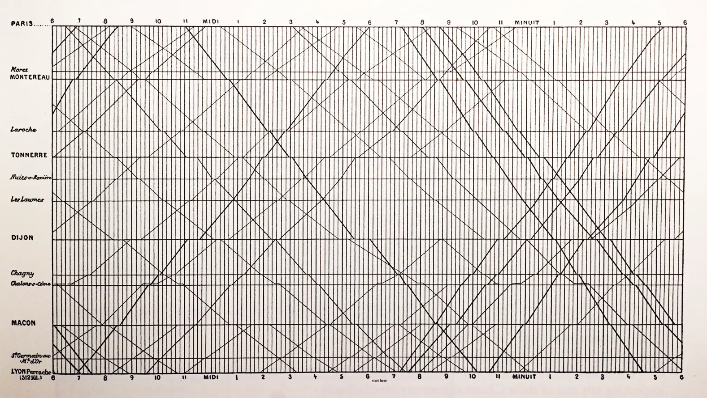

Marey's Train Schedule
D3js reproduction of the train schedule made by E. J. Marey.
Showing the trains between Paris and Lyon in the 1880s.
It was published in 1885.
Train Schedule between Oslo and Bergen.
The original, schedule between Paris and Lyon.
